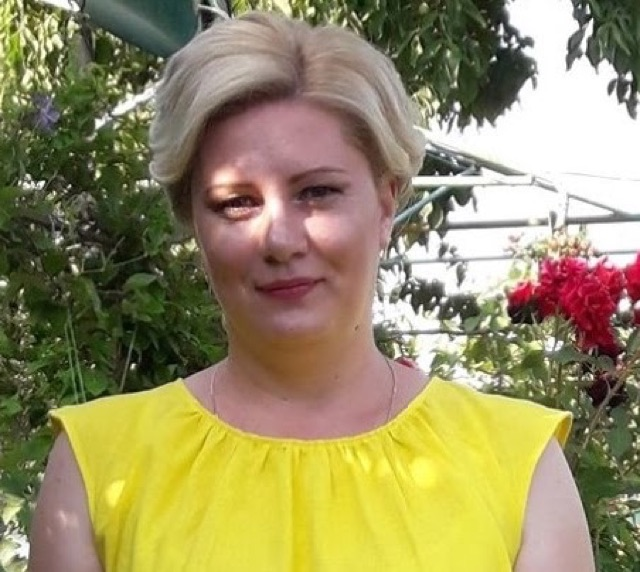
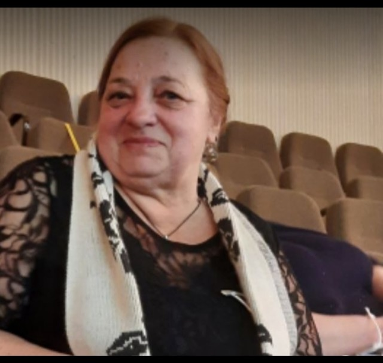

Біляївка · Одеський район · з 1897 року
Школа, яку впізнають за вітрилами
Комунальний ліцей з інклюзивним навчанням і трьома корпусами. Тут вчаться думати, дружити й не боятися ставити питання.
- 641 учень
- 23 класи
- 3 корпуси
- інклюзивне навчання
- НавчанняОчно, у дві змінидруга зміна — з 12:00
- Під час тривогиПереходимо в укриттяконтрольний час — 09:00 і 13:00
- ХарчуванняМеню на тиждень1–4 класи — безкоштовно
- Приймальня098 946 36 81приймальня, Пн–Пт 08:00–15:30
Швидко знайти
- Розклад уроків і дзвінківУроки по класах, дзвінки, структура навчального року
- Вступ до ліцеюДокументи, правила прийому, територія
- ХарчуванняМеню, режим, пільги
- Безпека і укриттяДії під час тривоги, дві зміни
- Психологічна службаПідтримка учнів і батьків
- Інклюзивне навчанняКоманда супроводу, асистенти
- Профільна школаАкадемічний ліцей з 2027 року
- ДокументиРеєстр за статтею 30
- Гуртки і клубиПласт, спорт, творчість
Новини ліцею
Усі новиниСтарша профільна школа
Академічний ліцей з 1 вересня 2027 року
Що зміниться для нинішніх дев’ятикласників, як обрати профіль і де поставити запитання.
Листопад за планомІнфографіка: що таке старша профільна школа, її мета й переваги
Усе про профільну школуПрозорість і документи
Статут, освітні програми, звіти й кошторис — у відкритому доступі за статтею 30 Закону «Про освіту». Біля кожного документа — дата оприлюднення.
Увесь реєстр документів- Алгоритм дій учасників освітнього процесу під час повітряної тривоги додаток до наказу №192-ооприлюднено 10.11.2026(PDF, відкриється в новій вкладці)
- Освітня програма початкової освіти (1–4 класи) на 2026/2027 навчальний рікоприлюднено 10.11.2026(PDF, відкриється в новій вкладці)
- Освітня програма базової середньої освіти (5–9 класи) на 2026/2027 навчальний рікоприлюднено 10.11.2026(PDF, відкриється в новій вкладці)
- Освітня програма профільної середньої освіти (10–11 класи) на 2026/2027 навчальний рікоприлюднено 10.11.2026(PDF, відкриється в новій вкладці)
- Комунікаційна стратегія щодо переходу до старшої профільної школи на 2026–2027 навчальний рікоприлюднено 10.11.2026(PDF, відкриється в новій вкладці)
- План комунікаційних заходів щодо впровадження старшої профільної школи на 2026–2027 рокиоприлюднено 10.11.2026(PDF, відкриється в новій вкладці)
Ліцей у цифрах
- 1897рік заснуванняцерковно-приходська школа
- 641ученьстаном на вересень 2026
- 23класистаном на вересень 2026
- 48працівниківза кадровим складом на 06.11.2025
- 1укриттяна 100 осіб
Адміністрація
Увесь кадровий склад
Кліменко Наталя МихайлівнаДиректор ліцеюУкраїнська мова та література- Кирилюк Юлія МиколаївнаЗаступник директора з навчально-виховної роботиТехнології та інформатика
- Ковальова Олена СергіївнаЗаступник директора з виховної роботиІнформатика
- Курдогло Антоніна ВасилівнаЗаступник директора з навчально-виховної роботиМузичне мистецтво

Опря Лідія ВолодимирівнаЗаступник директора з господарської частини
Гуртки і клуби
Усі гуртки- Курінь імені Анни Ярославни
Пластовий осередок при ліцеї: мандрівки, табори, вишколи, служіння громаді.
- Для кого
- 5–11 класи
- Коли
- субота, 10:00–13:00
- Де
- актова зала
- Клуб журналістики
Шкільні новини, інтерв’ю, зйомка та монтаж сюжетів.
- Для кого
- 7–11 класи
- Коли
- вівторок, 14:30–15:30
- Де
- каб. 24
- Євроклуб
Міжнародні проєкти, listening-клуб, підготовка до обмінів.
- Для кого
- 8–11 класи
- Коли
- четвер, 15:00–16:00
- Де
- каб. 31
Маєте питання?
Зателефонуйте до приймальні або напишіть. Якщо потрібен офіційний документ — подайте запит на публічну інформацію: ліцей відповідає протягом п’яти робочих днів.